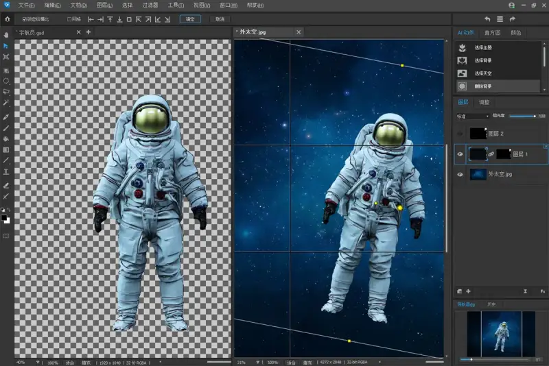
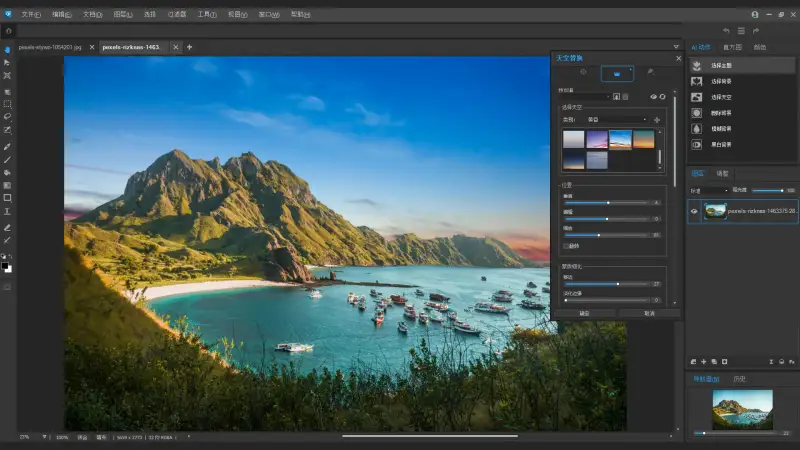
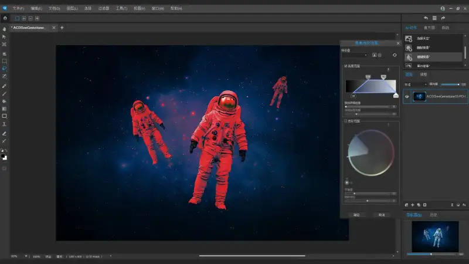

ACDSee, a leading global image-processing software brand, has launched the new ACDSee Photo Studio 15. This version is built around AI. It brings together several new features that cover the whole image-editing workflow. It gives professional designers and photography fans a smarter and more efficient creative tool, and opens a new age of image editing.
Core feature upgrades: a double breakthrough in AI and performance. AI makes image editing more stylized.
Photo Studio 15 adds AI-driven face editing for the first time. It analyzes facial structure, so users can easily adjust facial features and improve skin tone. It also adds natural makeup with one click. Whether you retouch a business portrait or beautify a daily photo, this tool makes fine adjustments while keeping a natural look.
The new ACDSee AI Super Resolution enlarges images while reducing noise and blur. It removes artifacts and keeps detail, so overall image quality rises. By refining every pixel, it gives stronger contrast and a clearer picture. Whether you prepare an image for large prints, bring old memories back to life, or revive a low-resolution photo, AI Super Resolution makes your work look its best.
Use AI Sky Replacement to open new ground and go beyond the limits of your view. Replace the sky in any photo with ease and redefine your landscape, with a seamless, natural result. Explore a set of preset sky templates, or import your own photo, and turn your grandest idea into a striking reality.
The new AI Actions and Object Selection tools also let you draw a simple stroke to build a precise mask fast. This greatly speeds up editing in complex scenes.

With the AI Object Selection tool, roughly draw around the several objects you want to select, and let the AI do the rest. The tool builds a precise selection around what you drew. It saves time, and you do not need to cut out objects by hand.
AI Actions run complex tasks with one click, such as selecting the background, sky, or AI subject, removing or blurring the background, or applying black-and-white mode. One click and the AI does it all. Even a beginner can finish post-processing with ease.
Layer editing and creative tools: release unlimited creative possibility.

As the flagship creative design product in the ACDSee family, Photo Studio 15 keeps the strengths of the multi-document interface (MDI). It supports unlimited layers, mask blending, and advanced light effects. Users can use the color wheel and tone wheel tools for precise color grading, or use frequency separation to enhance local detail. New path text and border text features add more ways to place dynamic text on an image.
The software also strengthens RAW file handling. The built-in ACDSee RAW editor supports live-preview adjustments, including light compensation, highlight recovery, and lens correction. Users can save custom presets to a library and apply them quickly across projects.
For performance, Photo Studio 15 uses GPU acceleration to speed up RAW decoding. It supports lossless editing of hundreds of popular camera models. It also keeps large documents smooth. Full 64-bit architecture keeps the software stable with high-resolution images and complex layers. It meets the needs of professional users for both precision and speed.

Photo Studio 15 redefines the standard of professional image editing. Through AI and performance tuning, it makes creative expression freer and faster. Whether you are a professional photographer or a hobbyist, you will find tools here that raise the quality of your work.
The product is now officially released on the ACDSee website. All users are welcome to try it.